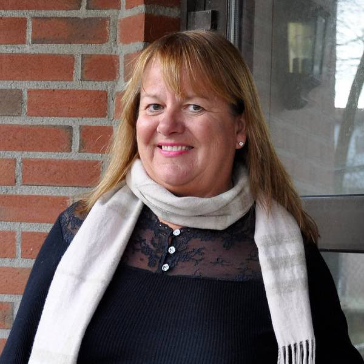

Da hennes sønn skulle begynne i barnehagen på 90-tallet, observerte hun hvordan dette kun var en oppbevaringsplass for barn, ikke et sted for læring og utvikling. Hun ønsket ikke å klage, så hun startet like greit sin egen barnehage. Med bakgrunn fra musikklinja og jobb i den franske skolen, kastet hun seg ut i det, og startet opp sin første Do Re Mi-barnehage med, fokus på språk og musikk. Det ble starten på en lang gründerreise, motivert av å gjøre barn gode!
For å finansiere det hele, valgte hun å pantsette det flotteste hun eide, flygelet sitt. Slik fikk hun råd til aksjekapitalen. I 2003 ble hennes mann Fredrik med på notene, og sammen har de utviklet et lite eventyr innen gründervirksomhet, - alltid med musikk og språk i fokus. Fra barnehager i nærområdet Østfold, gikk ferden til Sør-Afrika, hvor Fredrik og broren Håvard brettet opp ermene og satte spaden i jorda. En afrikansk Do Re Mi barnehage ble født.
«Læring og lek går hånd i hånd. Jeg så behovet for mer opplegg for barn i ung alder, og hvordan de tidlig kan bli gode i språk. Jeg visste også at å lære et musikkinstrument er med på å utvikle den kreative delen av hjernen».
Siden har det gått slag i slag. Seks barnehager senere, begynte foreldrene fra barnehagen å klage på den offentlige skolen. Etter årene med kreativ utfoldelse og læring i Do Re Mi-barnehagene, kjedet barna seg på skolen, hvor de ikke ble utfordret på samme måte. Samvittighetsfull og driftig som hun er, kastet hun seg ut i et nytt prosjekt; CIS. Children's International School er Lise og Fredriks fortsettelse av barnehagene, med 1.-10. klasse i mye av det samme konseptet - språk og musikk. CIS er også en IB-skole, som innebærer å gjøre elevene gode på kritisk tenkning, undersøkelser og presentasjoner allerede fra 1. klasse, - noe mange elever ikke opplever før på høyere utdanning.